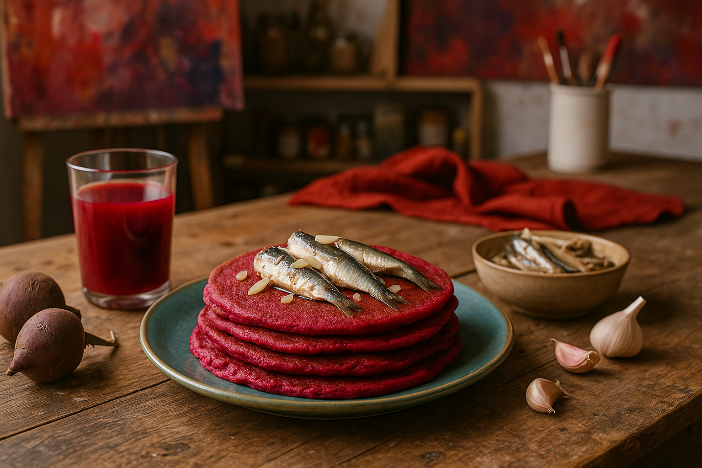
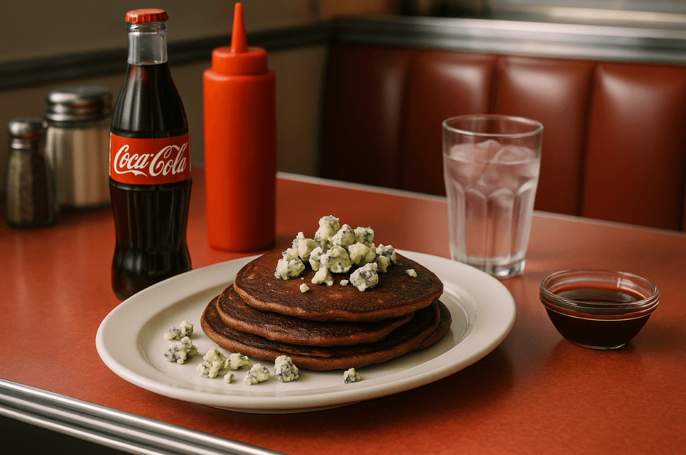
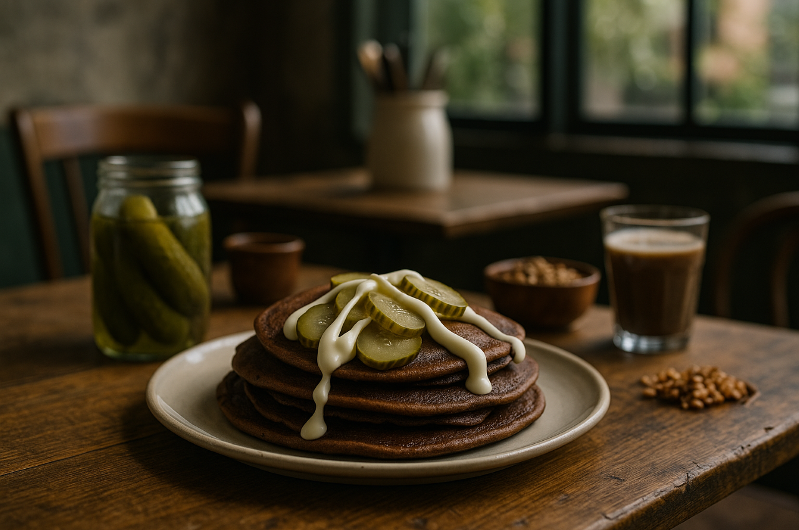

Hitta ditt nya favoritrecept!
Pannkakor med Surströmming & Vanilj
En djärv fusion där surströmmingens kraftfulla sälta möter len vanilj och krämig grädde. För dig som söker en riktigt unik smakupplevelse och vill imponera på gäster med ett vågat, oförglömligt pannkaksäventyr.

Lakrits & Leverpastejp-pannkakor
En oväntad kombination där salt lakrits möter krämig leverpastej och bildar en oförglömlig kontrast mellan sötma, sälta och mustiga toner. Perfekt för dig som vill upptäcka pannkakornas rebelliska, okända potential.

Fiskbulls-pannkakor i Currysås
Pannkakor fyllda med fiskbullar ger en oväntad nordisk twist, medan currysåsen tillför värme och aromatiska kryddor. En vågad rätt som kombinerar mild fisk och exotisk curry till en överraskande matupplevelse.

Ketchup & Vaniljglass-pannkakor
En smakexplosion där varm pannkaka möter kall glass och sötman bryts av med ketchupens syrliga tomattoner. En dessert-och-måltid-hybrid som verkligen överraskar den modiga smakresenären.

Tacos & Banansplit-pannkakor
Här möts två världar: kryddig tacofärs och söt banan i kombination med chokladsås. Ett djärvt recept som blandar dessert och middag i ett och lockar den som söker oväntad fusionmatlagning.
Rödbetsjuice & Sardiner-pannkakor
Rödbetans jordiga sötma färgar pannkakan vackert rosa, medan sardinerna tillför havssälta och fyllighet. En vågad och estetiskt slående rätt som garanterat sticker ut på bordet.
Coca-Cola & Ädelost-pannkakor
Colans karameliserade sötma möter ädelostens intensiva sälta och skapar en rik, djärv och oväntat komplex smakprofil. Ett perfekt val för den som vill ta pannkakor till helt okända kulinariska territorier.

Pepparkaka & Tonfisk-pannkakor
En kombination som blandar julens kryddvärme med tonfiskens milda sälta. Resultatet är en märkligt harmonisk kontrast som utmanar smaklökarna och erbjuder en helt ny typ av pannkaksupplevelse.

Senap & Apelsinmarmelad-pannkakor
En livlig kombination där skarp senap möter söt, citrusfrisk marmelad. Resultatet är en överraskande smakresa med både hetta och fräschör – perfekt för den som vill pröva pannkakor med karaktär.
Chokladpannkakor med Saltgurka & Majonnäs
En provocerande men fascinerande smakmix där kakao möter syrlig saltgurka och krämig majonnäs. En kulinarisk utmaning för dig som vågar kliva helt utanför pannkakans traditionella ramar.